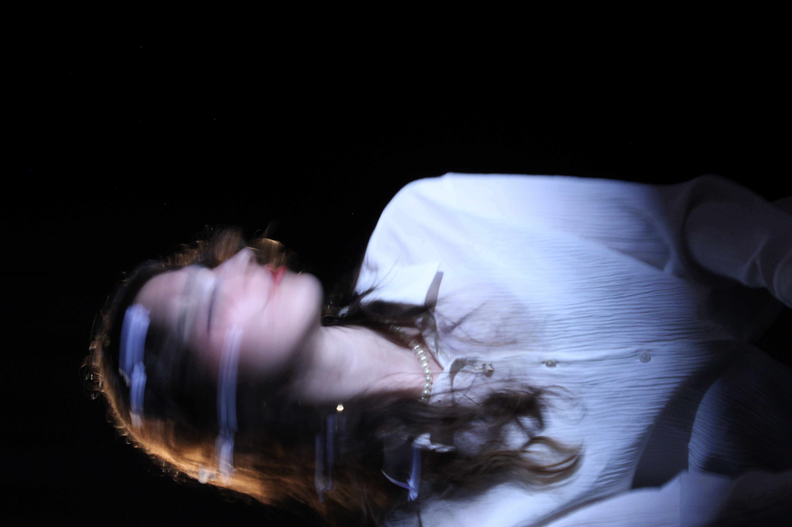
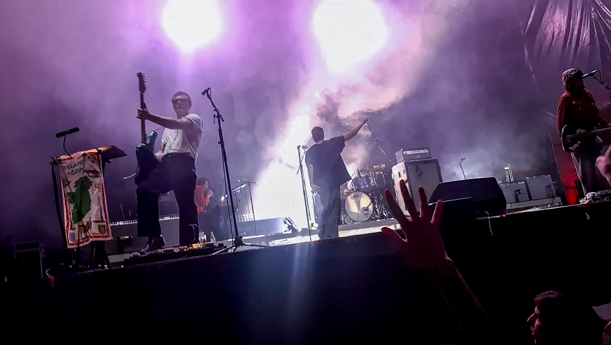
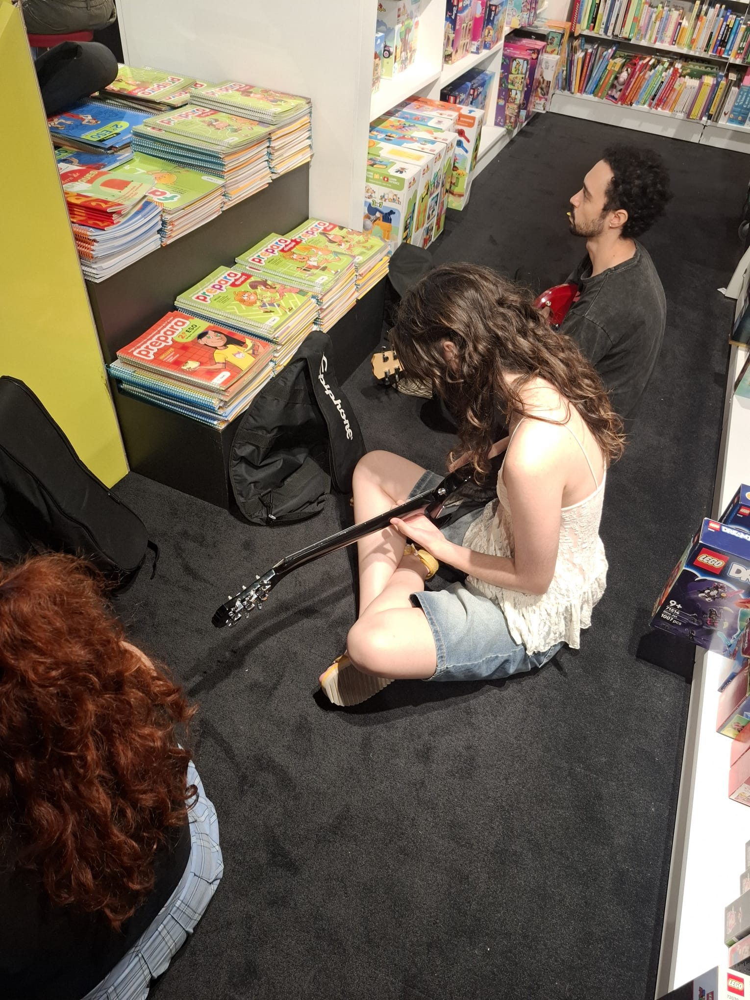

Hey! I’m Sofia.
I’m a design student interested in exploring the relationship between functionality, aesthetics and everyday life. I enjoy designing things that are not only visually appealing, but also meaningful, practical and capable of improving the way we interact with our surroundings.
My projects move between industrial and graphic design, from furniture and everyday objects to visual identities, editorial pieces and digital experiences. I’m particularly interested in the process behind a project: researching a problem, exploring different ideas, experimenting with materials and forms, and gradually turning an initial concept into a tangible result.
I’m naturally curious and enjoy looking for inspiration in places beyond design itself. Music is one of my biggest interests, especially the visual world surrounding it. Album covers, typography, colours, posters and the physical experience of vinyl have influenced the way I understand visual communication and have often become a starting point for my own projects. Beyond that, I also enjoy centering my project around the music industry itself, and would really love to work for the industry in the future.
As a designer, I’m always looking to learn, experiment and develop my own way of working. I enjoy combining different disciplines and approaches, while paying close attention to details and the relationship between an idea and its final form.
For me, design is about observing, questioning and transforming everyday ideas into something new.


